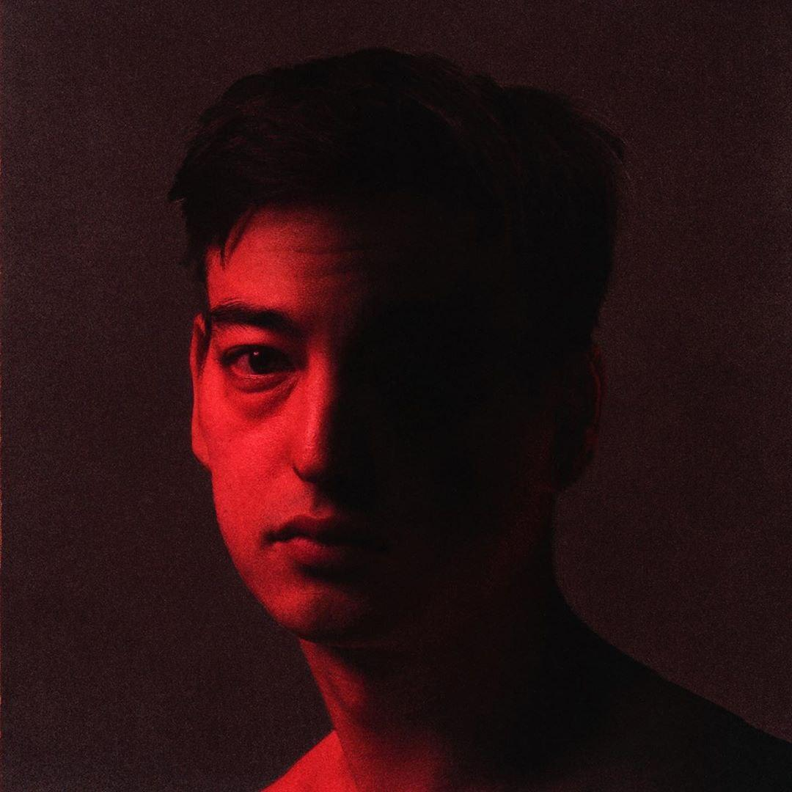

Nectar is the second studio album by Japanese singer-songwriter Joji, released on 25 September 2020 via 88rising. It features the singles "Sanctuary", "Run", "Gimme Love" and "Daylight".

George Kusunoki Miller (born 18 September 1992), better known by his stage name Joji, and is a Japanese singer-songwriter, record producer, author. You can find him from the links below.